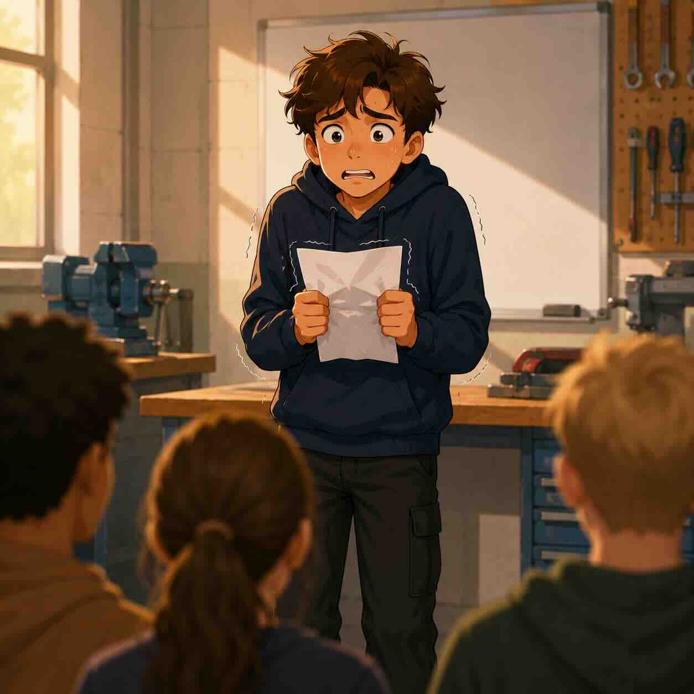

Le jury des stratégies
Observe cinq dossiers illustrés. Pour chaque dossier, le jury te demande de prouver ton raisonnement : diagnostiquer la situation, repérer le besoin, choisir une stratégie et vérifier son effet.
Timeline
Intensité
Besoin
Message-je
Stress
Dossier 1 sur 5
Score 0 / 20